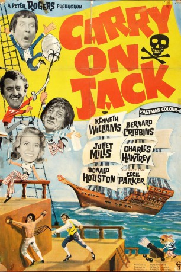
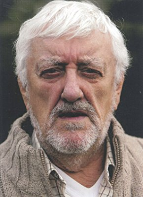
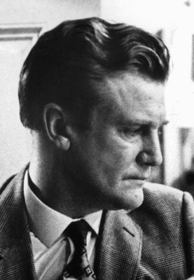
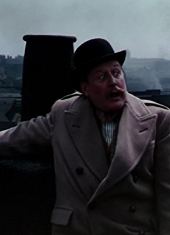
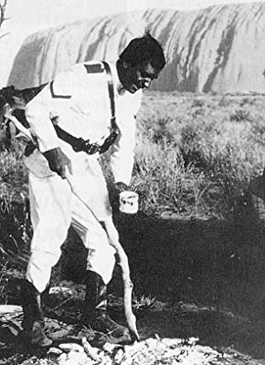
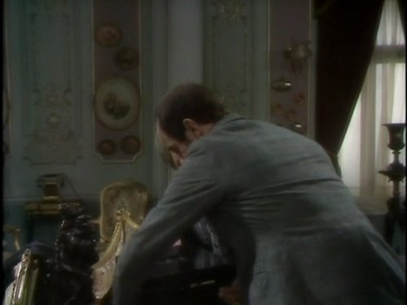
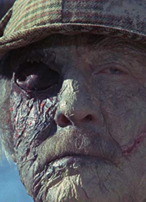
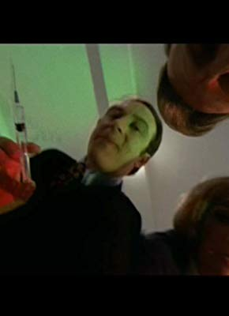
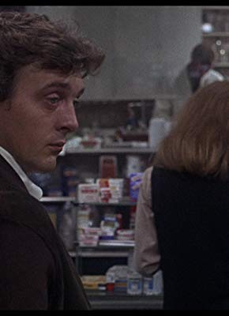
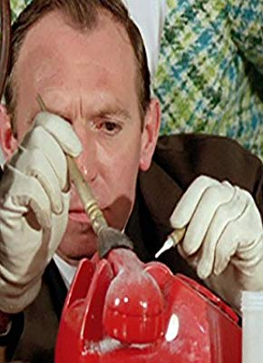

#11781 Carry On 08 - Ist ja irre - 'ne abgetakelte Fregatte *OmU*
Alternativ: Carry On Jack (Englischer Titel)
 
 IMDB-Wertung: 5.9 / 10
IMDB-Wertung: 5.9 / 10  Metascore: 0
Metascore: 0 
Wir befinden uns 1805 mitten im britisch-spanischen Seekrieg. Kapitän Fearless hat nur einen Wunsch – einen ruhigen Schreibtischposten. Doch dummerweise bekommt er das Kommando über die königliche Fregatte Venus. Zu diesem Schiff ist auch der Held des Films, Albert Poop-Decker, als Midshipman abkommandiert worden. Dummerweise werden ihm in einer Spelunke seine Papiere und seine Order gestohlen und er selbst wird schanghait – ironischerweise auf sein Schiff, die Venus. Niemand will ihm glauben, dass er Midshipman Poop-Decker ist, denn eine andere Person gibt sich für ihn aus. So muss er in den sauren Apfel beißen und als einfacher Matrose schuften.
Jahr: 1964
Dauer: 90 Minuten
FSK:
Land: England Studio: Anglo AmalgamatedTonspuren:
Untertitel:
Auflösung: 1080p (1792x1080) Größe: 1730 MB
Genre: Komödie, Abenteuer, Liebe
Regisseur: Gerald Thomas
Drehbuch: Talbot Rothwell
Soundtrack: Eric Rogers
Darsteller:
 Kenneth Williams als Captain Fearless
Kenneth Williams als Captain Fearless-  Bernard Cribbins als Midshipman Albert Poop-Decker
- Juliet Mills als Sally
 Charles Hawtrey als Walter Sweetly
Charles Hawtrey als Walter Sweetly-  Donald Houston als First Officer Jonathan Howett
 Percy Herbert als Mr. Angel, the Bos'un
Percy Herbert als Mr. Angel, the Bos'un Jim Dale als Young Carrier
Jim Dale als Young Carrier- Patrick Cargill als Don Luis, the Spanish Governor
-  Cecil Parker als First Sealord
-  Ed Devereaux als Hook, Pirate
 Peter Gilmore als Patch, Pirate Captain, aka Roger
Peter Gilmore als Patch, Pirate Captain, aka Roger- George Woodbridge als Ned
 Ian Wilson als Ancient Carrier
Ian Wilson als Ancient Carrier-  Anton Rodgers als Hardy
-  Frank Forsyth als Second Sealord
- Barrie Gosney als Coach Driver
- Viviane Ventura als Spanish Secretary
-  Marianne Stone als Peg
- Kenneth Cope als Sailor (uncredited)
-  Maxwell Craig als Deckhand (uncredited)
- Pat Gorman als Pirate (uncredited)
-  Guy Standeven als Pirate (uncredited)
- Dorinda Stevens als Girl at Dirty Dick's (uncredited)
 Reg Thomason als Naval Officer (uncredited)
Reg Thomason als Naval Officer (uncredited)- Jimmy Thompson als Adm. Horatio Nelson
- Michael Nightingale als Town Crier
- John Brooking als Third Sealord
- Jan Muzurus als Spanish Captain
- Chris Adcock als Pirate (uncredited)
- Tony Allen als Pirate (uncredited)
- Bernard Barnsley als Deck Hand (uncredited)
- Joe Beckett als Pirate (uncredited)
- Ted Bushell als Surgeon's Assistant (uncredited)
- Marian Collins als Girl at Dirty Dick's (uncredited)
- Dominique Don als Girl at Dirty Dick's (uncredited)
- Sally Douglas als Girl at Dirty Dick's (uncredited)
- Josie Grant als Woman Leaving Ship (uncredited)
- Jean Hamilton als Girl at Dirty Dick's (uncredited)
- Frank Harper als Man at Dirty Dick's (uncredited)
- Walter Henry als Deckhand (uncredited)
- Bill Hibbert als Rating (uncredited)
- Jennifer Hill als Girl at Dirty Dick's (uncredited)
- George Hilsdon als Deckhand (uncredited)
- Pat Judge als Pirate (uncredited)
- Max Latimer als Deck Hand (uncredited)
- Aileen Lewis als Onlooker (uncredited)
- Martin Lyder als Spanish Guard (uncredited)
- Fred Machon als Man at Dirty Dick's (uncredited)
- Rosemary Manley als Girl at Dirty Dick's (uncredited)
- Lou Morgan als Pirate (uncredited)
Datei: X:\7+mehr(A-Z)\Carry On\Carry On 08 - Ist ja irre - 'ne abgetakelte Fregatte OmU (1964, FSK, 1792x1080).mp4 seit 20.09.2019
Festplatte: HD Collection-7+mehr(A-Z)+Person
 Es gibt insgesamt 33 Filme in der Gruppe '7+mehr(A-Z)\Carry On'
Es gibt insgesamt 33 Filme in der Gruppe '7+mehr(A-Z)\Carry On'